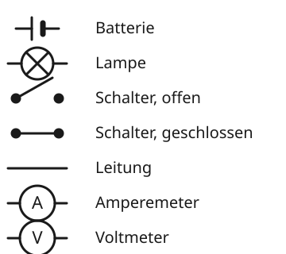
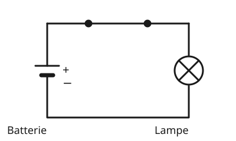

Der Schaltplan
Mit einem KI-Tutor lernen
Ein KI-Tutor erklärt dir diese Seite und hilft dir bei den Übungen. Wähl deinen Assistenten:
Mit Claude öffnen Mit ChatGPT öffnen Mit Mistral Vibe öffnen
Du nutzt dein eigenes Konto beim Anbieter. Der Assistent ist kein Angebot von lernapps.net: lernapps liefert nur Inhalte und Übungen. Die Wahl gilt für alle Seiten, nur auf diesem Gerät.
Eine Zeichnung, die alle verstehen
Willst du einem anderen zeigen, wie ein Stromkreis aufgebaut ist, brauchst du kein Foto. Es genügt eine Zeichnung aus einfachen Zeichen, die überall auf der Welt gleich aussehen. Eine solche Zeichnung heißt Schaltplan.
Schaltzeichen und Schaltplan
Jedes Bauteil hat ein festes Schaltzeichen. Leitungen zeichnest du als gerade Linien mit rechten Winkeln. Der Strom soll im Plan immer auf einem lückenlosen Weg laufen, wenn der Stromkreis geschlossen ist.

Die Schaltzeichen, die du in dieser App brauchst. Bei der Batterie ist der lange Strich der Pluspol.
Quelle: eigene Zeichnung. Lizenz: CC-BY-4.0.- Schaltplan
Ein Schaltplan ist eine Zeichnung eines Stromkreises, in der jedes Bauteil durch sein Schaltzeichen und jede Leitung durch eine Linie dargestellt wird.
Um einen Schaltplan zu lesen, verfolgst du den Weg von der Batterie durch alle Bauteile und zurück. Hat der Weg eine Lücke, etwa einen offenen Schalter, ist der Stromkreis offen.
Den Schaltplan lesen
Batterie, Schalter und Lampe

Ein Schaltplan mit drei Bauteilen.
Quelle: eigene Zeichnung. Lizenz: CC-BY-4.0.Du liest ihn so: Vom Pluspol der Batterie geht es durch den Schalter zur Lampe und zurück zum Minuspol. Der Schalter ist als durchgehende Linie gezeichnet, also geschlossen. Der Stromkreis ist geschlossen, und die Lampe leuchtet.
Übung
Übung
Lösung
Richtige Antwort: A – Batterie; B – Lampe; C – Schalter; D – Amperemeter
Die Batterie hat einen langen und einen kurzen Strich, die Lampe ist ein Kreis mit Kreuz, der Schalter hat einen abgehobenen Hebel, das Amperemeter ist ein Kreis mit A.
Mehr dazu:
Übung
Lösung
Nein, der Schalter ist offen. richtige Antwort
Der abgehobene Hebel bedeutet eine Lücke. Der Weg ist nicht geschlossen.
Ja, denn alle Bauteile sind gezeichnet.
Dass die Bauteile da sind, genügt nicht. Der Weg muss auch ohne Lücke sein.
Ja, denn die Lampe ist mit der Batterie verbunden.
Sie ist verbunden, aber nur über den Schalter, und der ist offen.
Ein offener Schalter unterbricht den Weg, also leuchtet die Lampe nicht.
Mehr dazu:
Übung
Lösung
Richtige Antwort: Die Aussage stimmt nicht.
Man zeichnet Schaltzeichen. Sie sind einfach und überall gleich, so versteht jeder den Plan.
Mehr dazu:
Übung
Lösung
Der lange Strich ist der Pluspol. richtige Antwort
Der kurze, dicke Strich ist der Minuspol.
Der kurze Strich ist der Minuspol. richtige Antwort
Lang ist plus, kurz ist minus.
Der lange Strich ist der Minuspol.
Es ist umgekehrt. Der lange Strich ist der Pluspol.
Beim Schaltzeichen der Batterie ist der lange, dünne Strich der Pluspol und der kurze, dicke Strich der Minuspol.
Mehr dazu: